Voice to text, right from your menu bar. 从菜单栏直接语音转文字。
v2.2.0Drag Voice2Text.app into the Applications folder. 将 Voice2Text.app 拖入 Applications 文件夹。
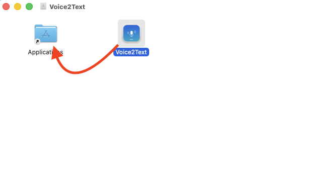
macOS will show a security warning when you first open the app. This is expected — Voice2Text is a free, open-source project distributed outside the App Store, so it does not carry Apple's paid developer signature ($99/year). Rest assured, the app is safe and the source code is publicly available for review. 首次打开应用时，macOS 会弹出安全警告。这是正常现象——Voice2Text 是免费开源项目，未通过 App Store 分发，因此没有 Apple 的付费开发者签名（$99/年）。请放心使用，源代码完全公开，欢迎审阅。
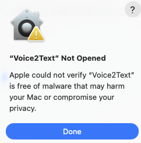
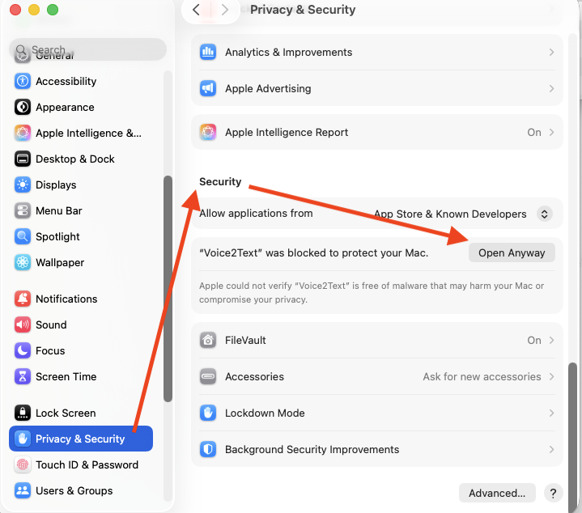
When you launch Voice2Text for the first time, a setup wizard will guide you through: 首次启动 Voice2Text 时，设置向导将引导你完成以下步骤：
Pick your preferred UI language: English or Simplified Chinese. 选择界面语言：English 或 简体中文。
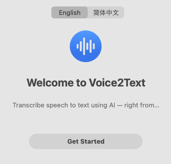
Choose a speech recognition model. Base is recommended for most users (fast + good accuracy). Larger models are more accurate but slower. 选择语音识别模型。推荐大多数用户使用 Base（速度快且准确度好）。更大的模型更准确但更慢。
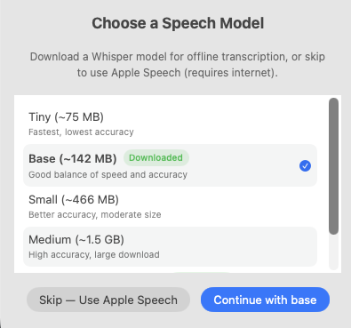
When you first try to record, macOS will show a system dialog: "Voice2Text" would like to access the microphone. You must click Allow — the app cannot function without microphone access. 首次录音时，macOS 会弹出系统对话框：「Voice2Text 想要访问麦克风」。你必须点击「允许」——没有麦克风权限，应用无法工作。
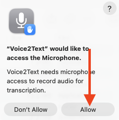
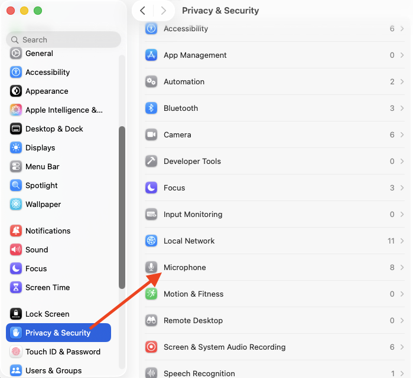
Required for the global hotkey auto-paste feature. Open System Settings → Privacy & Security → Accessibility. 全局快捷键自动粘贴功能需要此权限。打开 系统设置 → 隐私与安全性 → 辅助功能。
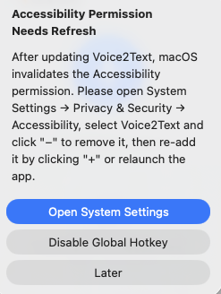
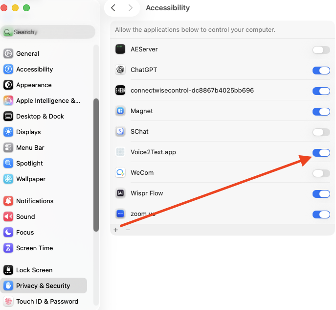
Open the main window and press & hold Space to record. Release to stop — the app will transcribe your speech automatically. 打开主窗口，按住 Space 开始录音。松开即停止——应用会自动转录你的语音。
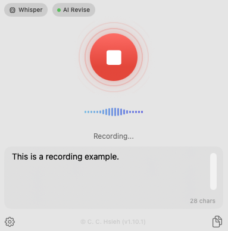
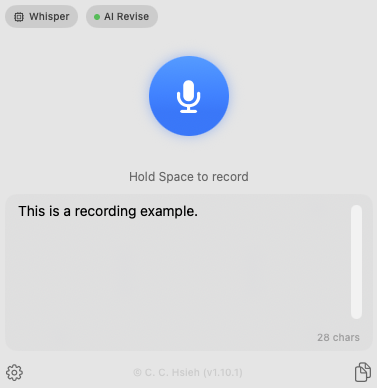
Voice2Text lives in your menu bar. Click the icon to access quick actions: start/stop recording, switch models, toggle settings. Voice2Text 常驻菜单栏。点击图标可快速操作：开始/停止录音、切换模型、打开设置。
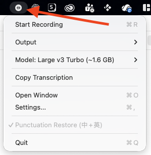
The killer feature — record from any app and auto-paste the result. 核心功能——在任何应用中录音，自动粘贴结果。
A floating panel appears. Speak while holding the keys. 浮动面板出现，按住按键的同时说话。
The panel shows a progress indicator while transcribing. 面板显示转录进度。
The transcribed text is automatically pasted at your cursor position. 转录文本自动粘贴到你的光标位置。
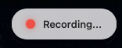
Access Settings from the menu bar or by pressing ⌘ + , in the main window. 从菜单栏打开设置，或在主窗口中按 ⌘ + ,。
| Tab 标签页 | What You Can Configure 可配置项 |
|---|---|
| General通用 | UI language, STT engine (Whisper / Apple Speech), output script (Simplified / Traditional Chinese) 界面语言、语音引擎（Whisper / Apple 语音识别）、输出字体（简体/繁体中文） |
| Models模型 | Download, switch, or delete Whisper models 下载、切换或删除 Whisper 模型 |
| Shortcuts快捷键 | Customize global hotkey, check Accessibility permission 自定义全局快捷键、检查辅助功能权限 |
| AI ServicesAI 服务 | Configure LLM for post-edit text improvement (Local LLM or Cloud API) 配置 LLM 进行转录后文本润色（本地 LLM 或云端 API） |
| Advanced高级 | Punctuation restoration model, developer mode 标点还原模型、开发者模式 |
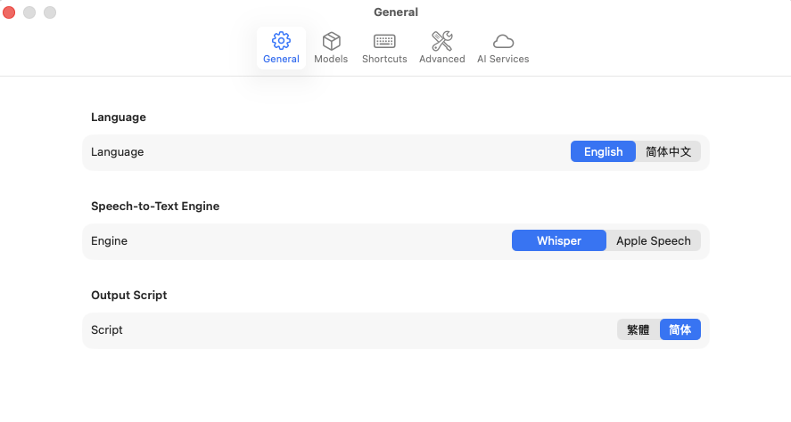
Chinese transcriptions automatically get punctuation added via an on-device BERT model. Download it from Settings → Advanced. No internet required. 中文转录自动通过设备端 BERT 模型添加标点。在设置 → 高级中下载模型，无需联网。
Optionally send transcriptions through an LLM for improved clarity and flow. In Settings → AI Services, choose a post-edit provider: 可选将转录文本通过 LLM 润色，提升表达流畅度。在设置 → AI 服务中选择后编辑服务：
Local LLM (Recommended): Run Qwen 3.5 / 2.5 models entirely on your Mac — no internet, no API fees. Select "Local LLM" and download a model. Qwen 3.5 is recommended for best results. 本地 LLM（推荐）：在 Mac 上运行 Qwen 3.5 / 2.5 模型——无需联网、无需 API 费用。选择「本地 LLM」并下载模型即可。推荐使用 Qwen 3.5 以获得最佳效果。
Cloud API: Use Anthropic Claude or compatible API for cloud-based post-editing. Select "Cloud API" and configure your API key. 云端 API：使用 Anthropic Claude 或兼容 API 进行云端润色。选择「云端 API」并配置 API 密钥。
Whisper supports automatic language detection. Speak in any language and it will be recognized. Whisper 支持自动语言检测，说任何语言都能识别。
Seamlessly convert between Simplified and Traditional Chinese output. 在简体和繁体中文输出之间无缝切换。
| Problem 问题 | Solution 解决方案 |
|---|---|
| App won't open (security warning) 无法打开应用（安全警告） | Right-click → Open → Open. Or: System Settings → Privacy & Security → Open Anyway. 右键 → 打开 → 打开。或者：系统设置 → 隐私与安全性 → 仍要打开。 |
| No audio / microphone not working 没有声音 / 麦克风不工作 |
1. System Settings → Privacy & Security → Microphone → make sure Voice2Text is toggled ON. 2. If Voice2Text is not in the list, try recording once — macOS should prompt you. If it still doesn't appear, restart the app. 3. Check that your Mac's input device is set correctly in System Settings → Sound → Input. 1. 系统设置 → 隐私与安全性 → 麦克风 → 确认 Voice2Text 的开关已打开。 2. 如果列表中没有 Voice2Text，尝试录音一次——macOS 应会弹出提示。若仍未出现，请重启应用。 3. 检查系统设置 → 声音 → 输入中的输入设备是否正确。 |
| Global hotkey not pasting 全局快捷键无法粘贴 | System Settings → Privacy & Security → Accessibility → add Voice2Text. After app updates, you may need to remove and re-add it. 系统设置 → 隐私与安全性 → 辅助功能 → 添加 Voice2Text。应用更新后，可能需要先移除再重新添加。 |
| Model download stuck 模型下载卡住 | Check your internet connection. Models are downloaded from HuggingFace. Try a different model size. 检查网络连接。模型从 HuggingFace 下载，可以尝试其他大小的模型。 |
| Apple Speech not available Apple 语音识别不可用 | Apple Speech requires an internet connection. Check your network status. Apple 语音识别需要联网，请检查网络状态。 |
| Shortcut 快捷键 | Action 操作 |
|---|---|
| Space (hold)（按住） | Push-to-talk in main window 在主窗口中按住说话 |
| ⌘ + ; (hold)（按住） | Global hotkey — record from any app 全局快捷键——在任何应用中录音 |
| ⌘ + C | Copy transcription 复制转录文本 |
| ⌘ + , | Open Settings 打开设置 |